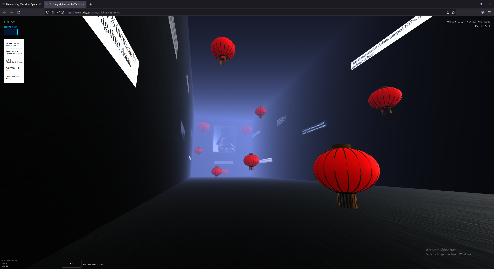
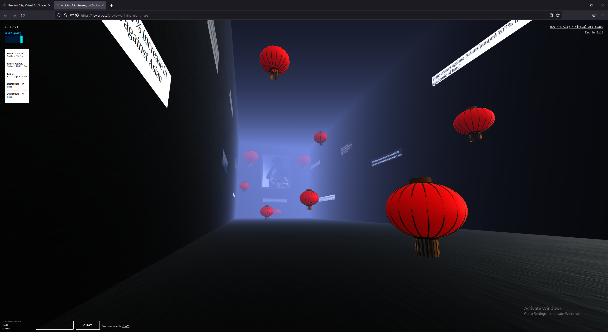
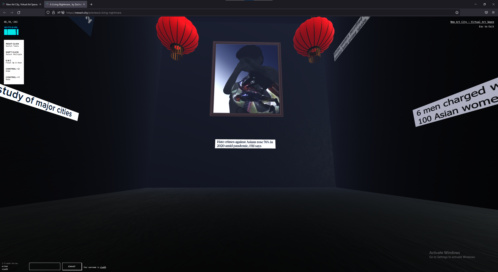
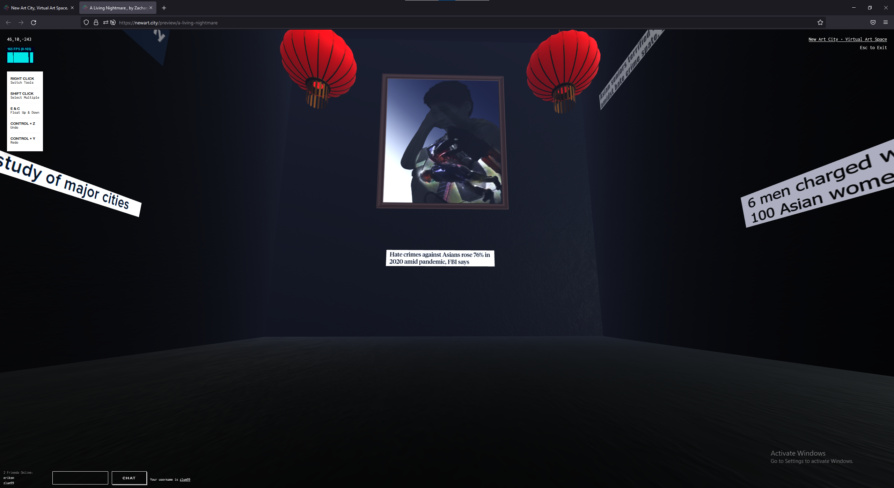

A Living Nightmare gives a glimpse into what Asian Americans have been dealing with since the start of the COVID-19 Pandemic. Asian American hate unfortunately has been occurring for centuries and it has only now gotten attention from the media in 2020 and 2021. This project focuses on the recent events of Asian American hate that have transpired over the past couple of years. I hope to bring awareness about Asian American hate in a creative way with this exhibition.
DISCLAIMER: Before you enter the room, make sure the audio on your device is working! When you enter the room, walk around and look around you as you are surrounded by shocking headlines with regards to Asian American Hate. While reading the headlines and viewing the main digital composite image at the end of the room, take a listen to some of the audio that surrounds you.
ARTIST BIO
All of my work that is presented to my audience is based on a digital experience. Websites, video editing, and the user interface are all different subjects I want to specialize in. Living in a period where humans heavily rely on technology to go about their daily routines whether it be for work or leisure. All three of those subjects that I want to specialize in as a digital media artist and grow my knowledge are things that people see and use in their everyday lives. I enjoy creating work that other digital artists have done in the past but then recreating them to fit my needs by adding a more personalized piece. Depending on the project that I am working on, I am always putting my best ideas for each project because they each have their purpose.
Through my past work experiences and skills that I have learned from my higher education, I have worked on numerous projects that have helped the company. The Startup Major Intern video that I created for the company highlights the internship program and markets what interns did and what they enjoyed about the internship program. In another internship, the website I and another intern created for TCR (technical consulting and research, inc.) was a crucial part of the company. Before I started working for the company, the website was not user-friendly, dated, and not responsive. Having a website for the company is crucial as it can showcase different elements of the company to the general public. Most of my works are created using various applications like Adobe Photoshop and Premiere Pro. New applications I have been able to explore more are Wix, After Effects, and Blender. As an artist, I am always willing to learn more to grow my skill sets when creating work that is based on a digital experience.
 

 
